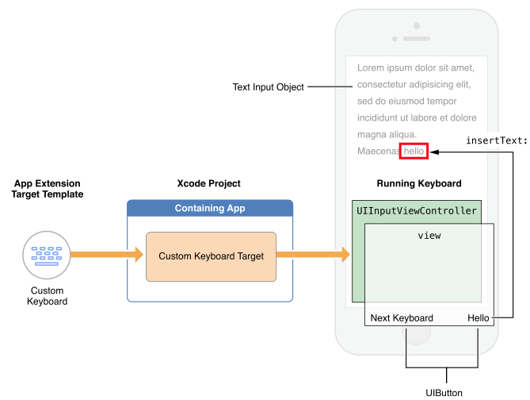
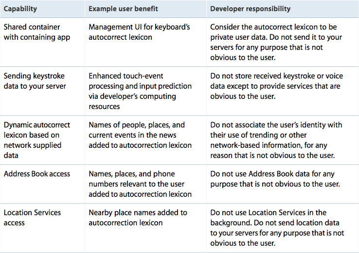
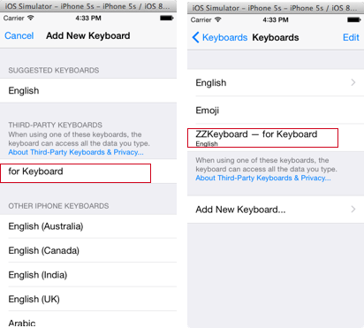
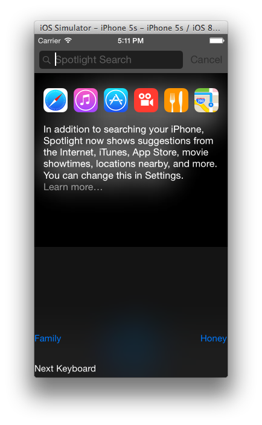

Author: Charles Zhu
Summary: ios8 app extension
1 开始
本篇介绍剩下的Custom Keyboard，之前的3篇：
- 第一篇: 介绍了Extension的基本概念/运行周期/数据共享等通用技术细节
- 第二篇介绍并实践:widget，share，action和Photo Editing
- 第三篇介绍并实践了Sync和File Procvider
2 Custom Keyboard
iOS8终于对第三方输入法开放，引起一片毋需越狱的呼声，这就是通过extension实现的。在以前，app可以单独实现适合自己的文本输入法；而iOS8上，如果用户在设置中添加第三方的键盘，就会对所有app可见(如果app没有禁止使用第三方输入法的话)。对于重视用户隐私的苹果公司而言，虽然开放了输入法的扩展，但是对于用户数据和隐私的保护是非常重视，因此在开发的时候要时刻关注。
2.1 第三方输入法要具备的特征
输入法的核心是要对用户的点击等手势及时的响应，提供可选的文本和插入文本等。除此之外，重要的就是要能够切换到下一个输入法。苹果文档中列出了一些特征，虽然不要求全部实现，但实现的话会加分：
- 根据键盘类型，提供合适的页面布局
- 自动纠正和建议
- 自动的大小写(指首字母大写)
- 双击space生成句号(这个很多人都不知道吧)
- 大小写
- 提供键帽的图片(keycap artwork)
- 为表意文字提供多级输入
要注意的是，在设置中对键盘的一些设置，只对系统的键盘有效。因此，如果要添加自定义键盘的设置，需要自行添加setting bundle。如果输入的文本要求是加密，那么iOS会自动使用系统的键盘暂时代替第三方的键盘输入。对于指定拨号类的输入如UIKeyboardTypePhonePad和UIKeyboardTypeNamePhonePad，第三方输入法也是不支持的。
因为第三方的输入法对所有的app都是适用的，所以iOS8中也提供了方法，供app选择是否可以使用第三方输入。如果只想使用系统的键盘输入，那么只要实现如下代理：
- (BOOL)application:(UIApplication *)application shouldAllowExtensionPointIdentifier:(NSString *)extensionPointIdentifier
{
return NO;
}
2.2 API的使用
首先来看一下第三方输入法的基本构成：

第三方输入法激活后的调用和系统输入法的界面构成完全一样，页面主要是由UIInputViewController的子类构成，可以在上面添加各种按钮或其他控件。图上很明显的加了可以切换输入法的按钮，和上述的要点吻合。Text Input Object是类似UITextView会弹出键盘的对象，insertText:则是输入法输出字符这个最基本的功能。
UIInputViewController包含一个实现了UITextDocumentProxy协议的NSObject属性textDocumentProxy，该proxy对象作用比较大，以下事情都是由它负责的：
- 插入/删除字符
- 查看当前文本
-
控制插入光标的位置 由于
UIInputViewController实现了UITextInputDelegate协议，当字符选中或输入的字符有变化时，相应的代理方法会触发。
对于要支持多语言的，可以有2种选择： -
为每一种语言设计一个键盘，并作为一个单独的Custom Keyboard对象添加到containing app中
- 只设计一个键盘，在切当的时候动态切换到主语言。使用primaryLanguage属性可以切换到主语言
对于自动纠正，可以通过UILexicon访问基本的自动纠正词库。词库的来源：
- 来自通讯录中的姓/名数据
- 在Settings>General>Keyboard>Shortcuts list中定义的数据
- 常见的单词库
关于键盘的高度，最好设置成和UIInputViewController中视图的高度一致。默认情况下，键盘的宽度是始终和屏幕的宽度一致的，所以我们只需要关心高度的设置。
2.3 开发的要点
主要指： 1. Trust: 慎重对待用户的输入数据 2. "next keyboard" key: 可以切换到下一输入法
2.3.1 信任
主要涵盖以下3个方面：
1. 按键数据的安全性：因为可以根据按键知道输入的文本内容，千万不能以任何接口上传到自己的服务器
2. 慎用其他数据：启用了network access后，就能访问位置和通讯录，那么使用这些数据的时候就要想好如何跟用户解释
3. 精确性：这个不涉及隐私，主要是影响到用户是否认为你是合意的输入法
默认情况下，网络访问是关闭的，当启用后，输入法将获得一些额外能力，但同时输入法的责任也相应的增加：

以上列出了所有增加的能力以及开发者需要考虑的问题。
2.4 模版文件
新建一个Custom Board的target，安装并运行containing app一下，然后就可以在Settings>General>Keyboard>Keyboards>Add New Keyboard中添加，然后打开某个文本，可以切换到我们定义的输入法。
自定义的键盘的名字可以在plist文件中用Bundle display name指定，如果在containing app和extension都指定了该键值的话，那么在添加键盘的时候会显示Contaning app中定义的名字，添加完毕后两者都一起显示:

接下来看一下plist文件：
<dict>
<key>NSExtensionAttributes</key>
<dict>
<key>IsASCIICapable</key>
<false/>
<key>PrefersRightToLeft</key>
<false/>
<key>PrimaryLanguage</key>
<string>en-US</string>
<key>RequestsOpenAccess</key>
<false/>
</dict>
<key>NSExtensionPointIdentifier</key>
<string>com.apple.keyboard-service</string>
<key>NSExtensionPrincipalClass</key>
<string>KeyboardViewController</string>
</dict>
要打开完全访问，需要设置RequestsOpenAccess为true。IsASCIICapable指的是是否可以输入ascii字符，PrefersRightToLeft是为从右向左的语言设置的。而PrimaryLanguage是键盘的主语言，它的写法是<language>-<REGION>。相应的语言和地区的值的定义在这里。
Build&Run一下，我们的输入法就安装在系统了，使用前先在设置中启用，然后打开搜索，切换几下，就可以看到了:

3 结束
至此，所有的extension都讲解完了，extension的基本原理贯穿在7中extension之中。Store上已经有很多实现extesnion的app，而且我发现实现了extension的app提交后在2个小时左右就能waiting in review，所以开发者们要加油了。